#remotes::install_github("ropensci/rnaturalearthdata")
#remotes::install_github("ropensci/rnaturalearthhires")13 Visualización espacial - Mapas (II)
En esta practica vamos a revisar cómo hacer mapas desde “0” y también un poco de geolocalización
13.1 Paquetes
Paquetes en desarrollo a instalar:
Paquetes en CRAN
if(!require('pacman')) install.packages('pacman')Loading required package: pacmanpacman::p_load(tidyverse, # ya lo conocemos
googleway, ggrepel, ggspatial, lwgeom, sf, mxmaps,
rnaturalearth,
rnaturalearthdata, rnaturalearthhires, # github pero para que los cargue
mapview, ggmap, osmdata) 13.2 Mapa mundial
Vamos a hacer un mapa mundial con el paquete {rnaturalearth} Más sobre este paquete por acá: https://cran.r-project.org/web/packages/rnaturalearth/vignettes/rnaturalearth.html
Vamos a utilizar también el paquete {sf} https://r-spatial.github.io/sf/articles/
Por ello, vamos a pedir que nos baje la información en formato sf
Vamos a hacer un mapa mundial, primero jalamos la información en un objeto
world <- rnaturalearth::ne_countries(scale = "medium",
returnclass = "sf")
class(world)[1] "sf" "data.frame"Hay otros bases que están a un nivel administrativo más bajo
world_states <- rnaturalearth::ne_states(returnclass = "sf")
class(world)[1] "sf" "data.frame"Vamos a hacer los graficos, utilizando {ggplot2} con geom_sf()
world %>%
ggplot() +
geom_sf() 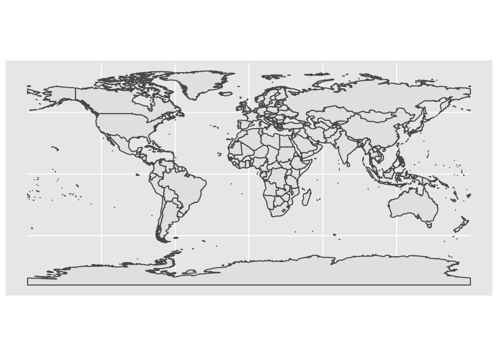
Vamos a modificar el tema para que se vea mejor:
world %>%
ggplot() +
geom_sf(alpha=I(0.0)) +
theme_minimal()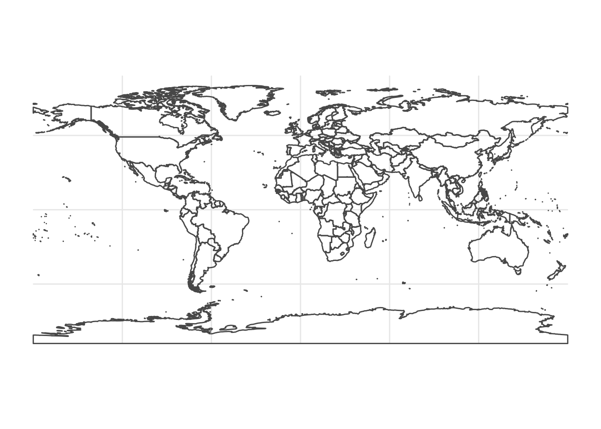
Veamos el caso del otro objeto con mas divisiones geopolíticas:
world_states %>%
ggplot() +
geom_sf(alpha=I(0.0)) +
coord_sf(xlim = c(-102.15, -74.12),
ylim = c(7.65, 33.97)) + # podemos limitar coordenadas
theme_minimal()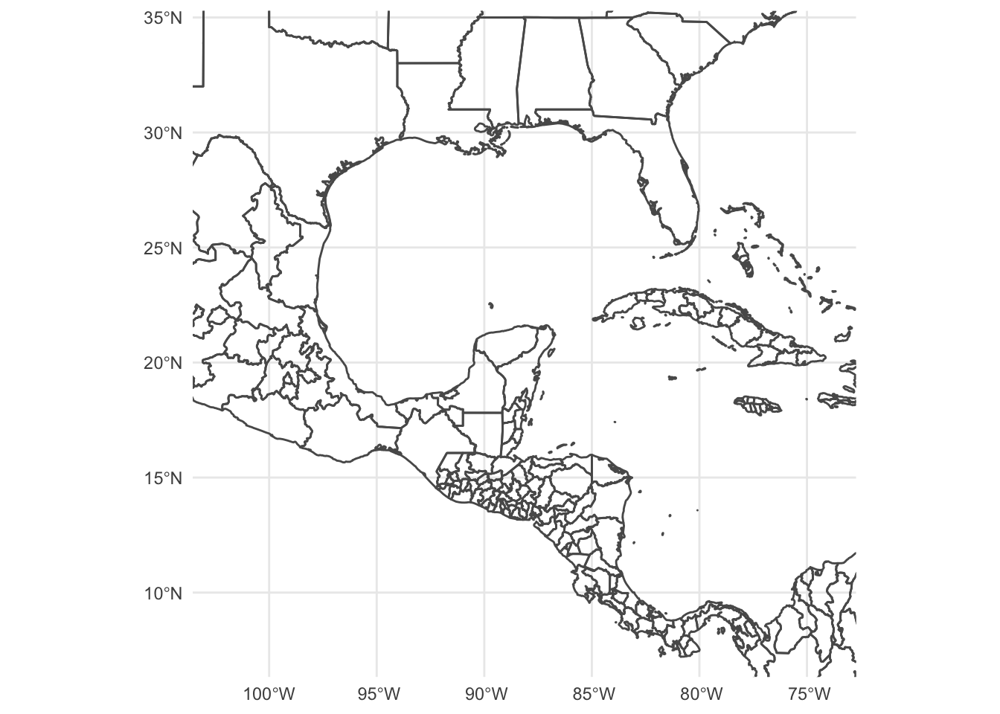
A jugar con las coordenadas https://www.geodatos.net/coordenadas
De Tijuana a Cuba
world_states %>%
ggplot() +
geom_sf(alpha=I(0.0)) +
coord_sf(xlim = c(-117.00371, -77.781167),
ylim = c(32.5027, 21.521757)) + # podemos limitar coordenadas
theme_minimal()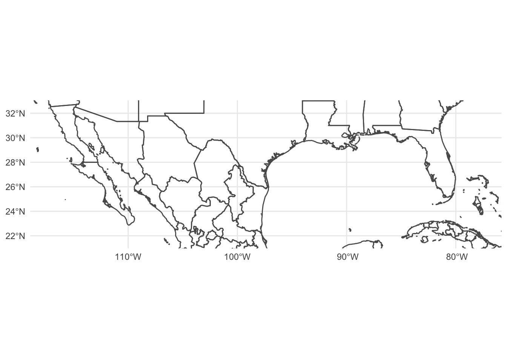
13.3 Mapa de México
Vamos a especificar que sólo queremos la información de México
sfdf_mexico_0 <- ne_countries(country = 'mexico',
returnclass = "sf",
scale = "large")
sfdf_mexico_1 <- ne_states(country = 'mexico',
returnclass = "sf")Veamos como quedaría el mapa, sin divisiones políticas:
sfdf_mexico_0 %>%
ggplot()+
geom_sf() +
theme_void() # 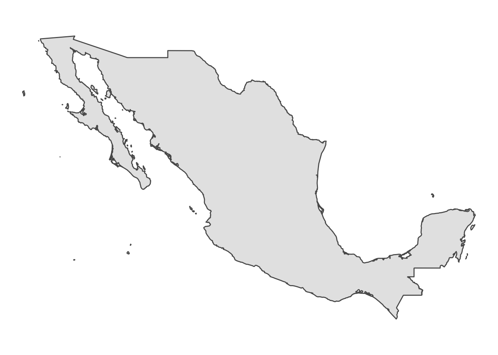
Ahora con dimensiones políticas
sfdf_mexico_1 %>%
ggplot()+
geom_sf(alpha=I(0.1), fill="green") +
theme_void() # 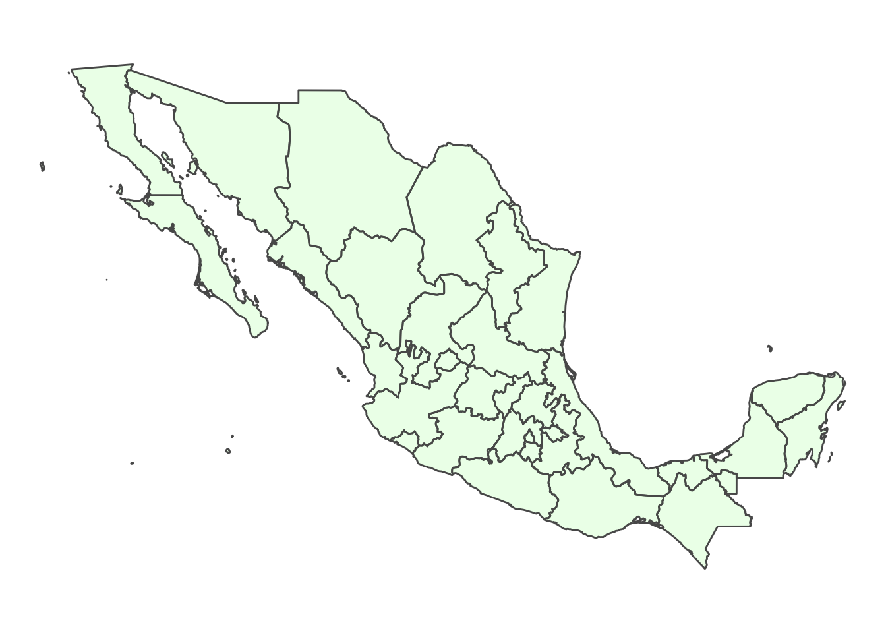
13.4 Algunos adornos interesantes de {ggspatial}
Algunas anotaciones sobre la escala se pueden anotar en nuestros mapas
13.4.1 La escala
sfdf_mexico_1 %>%
ggplot()+
geom_sf(alpha=I(0.1), fill="green") +
annotation_scale(location = "bl", #Bottom left
width_hint = 0.5)+
theme_void() Scale on map varies by more than 10%, scale bar may be inaccurate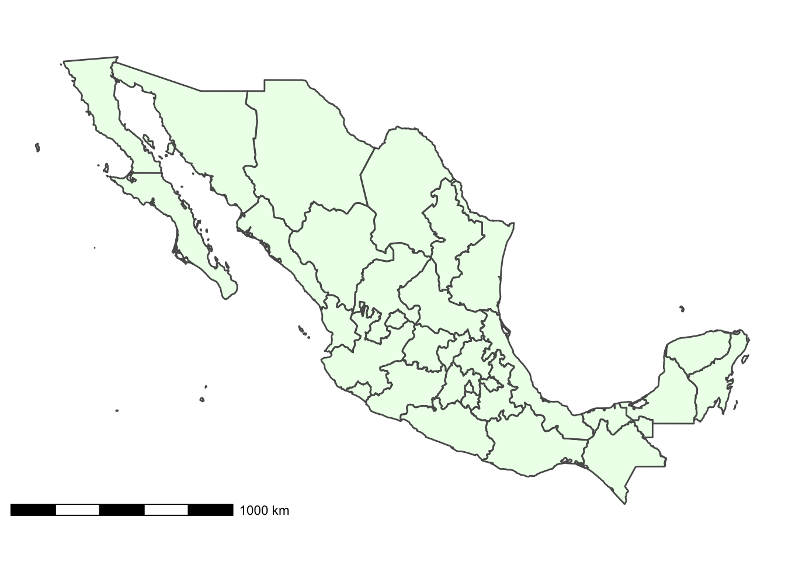
13.4.2 Para no nortearse…
sfdf_mexico_1 %>%
ggplot()+
geom_sf(alpha=I(0.1), fill="green") +
annotation_scale(location = "bl", #Bottom left
width_hint = 0.5) +
annotation_north_arrow(location = "bl",
which_north = "true",
pad_x = unit(0.75, "in"),
pad_y = unit(0.5,"in"),
style = north_arrow_fancy_orienteering) +
theme_void() Scale on map varies by more than 10%, scale bar may be inaccurate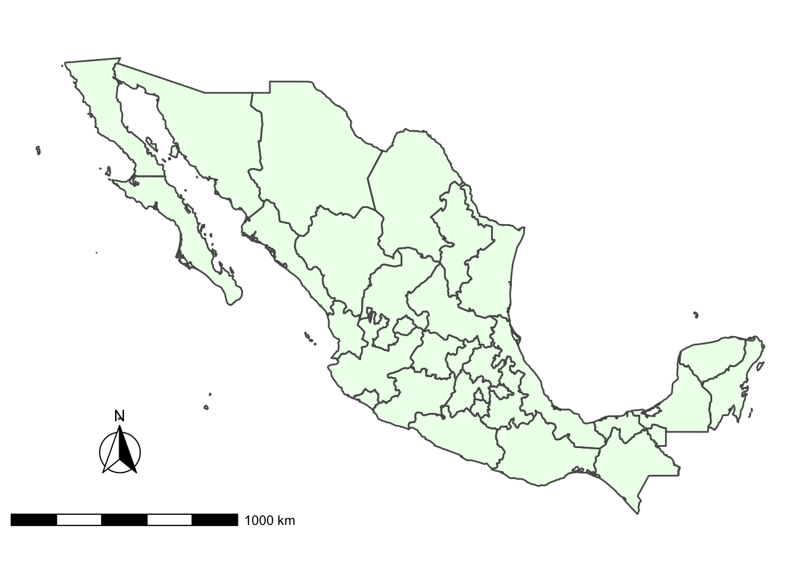
13.5 Open street map {osmdata}
En el paquete {osmdata} tenemos toda la información de Open Stret Map. https://rspatialdata.github.io/osm.html
Revisemos algunos elementos
osmdata::available_features() %>% head()[1] "4wd_only" "abandoned" "abutters" "access" "addr" "addr:city"osmdata::available_tags("amenity") %>% head()[1] "animal_boarding" "animal_breeding" "animal_shelter" "arts_centre"
[5] "atm" "baby_hatch" osmdata::available_tags("water") [1] "basin" "canal" "ditch" "fish_pass"
[5] "lagoon" "lake" "lock" "moat"
[9] "oxbow" "pond" "reflecting_pool" "reservoir"
[13] "river" "stream_pool" "wastewater" osmdata::available_tags("public_transport")[1] "platform" "station" "stop_area" "stop_position"function getbb() to retrieve the bounding box of a place using its name
cdmx_bb<-osmdata::getbb("Mexico City")Podemos hacer una overpass query opq(), utilizando los datos anteriores:
The Overpass API (formerly known as OSM Server Side Scripting, or OSM3S before 2011) is a read-only API that serves up custom selected parts of the OSM map data. It acts as a database over the web: the client sends a query to the API and gets back the data set that corresponds to the query.
cdmx_hospitals <- cdmx_bb %>%
opq() %>%
add_osm_feature(key = "amenity", value = "hospital") %>%
osmdata_sf()Veamos qué hay adentro de este objeto
cdmx_hospitals$osm_multipolygonsSimple feature collection with 4 features and 12 fields
Geometry type: MULTIPOLYGON
Dimension: XY
Bounding box: xmin: -99.3532 ymin: 19.19719 xmax: -98.9411 ymax: 19.59259
Geodetic CRS: WGS 84
osm_id name amenity building
2417974 2417974 Centro Médico Universitario hospital public
11632168 11632168 Complejo de hospitales IMSS hospital
11965820 11965820 Hospital General de zona No. 47 IMSS hospital
12272524 12272524 Hospital General de Zona No. 24 hospital
emergency healthcare operator
2417974 hospital
11632168 yes hospital IMSS
11965820 IMSS
12272524 hospital Instituto Mexicano del Seguro Social
operator.short operator.type operator.wikidata
2417974
11632168 public
11965820
12272524 IMSS government Q904999
operator.wikipedia type
2417974 multipolygon
11632168 multipolygon
11965820 multipolygon
12272524 es:Instituto Mexicano del Seguro Social multipolygon
geometry
2417974 MULTIPOLYGON (((-99.18663 1...
11632168 MULTIPOLYGON (((-99.20053 1...
11965820 MULTIPOLYGON (((-99.05456 1...
12272524 MULTIPOLYGON (((-99.13031 1...Estos polígonos ya los podemos dibujar con sus coordenadas:
cdmx_hospitals$osm_multipolygons %>%
ggplot()+
geom_sf(fill = 'light blue')+
theme_minimal()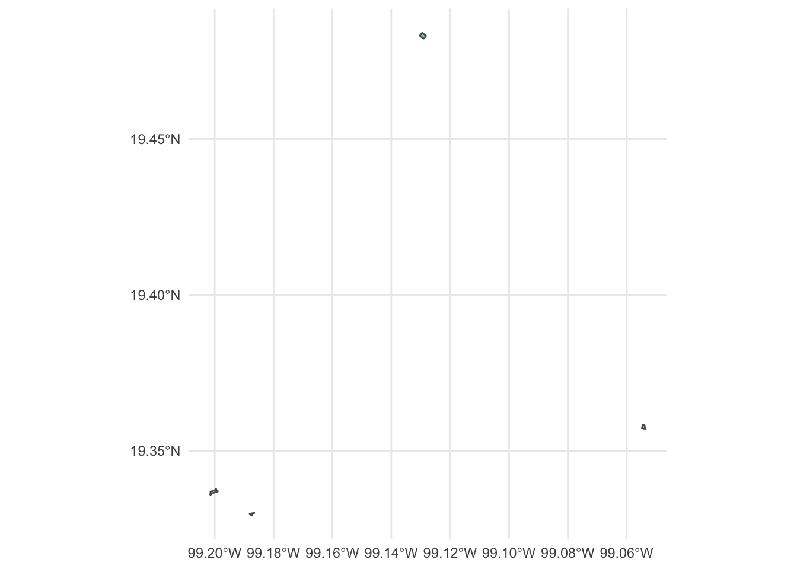
cdmx_map <- ggmap::get_map(cdmx_bb, maptype = "roadmap")Source : http://tile.stamen.com/terrain/11/458/910.pngSource : http://tile.stamen.com/terrain/11/459/910.pngSource : http://tile.stamen.com/terrain/11/460/910.pngSource : http://tile.stamen.com/terrain/11/461/910.pngSource : http://tile.stamen.com/terrain/11/458/911.pngSource : http://tile.stamen.com/terrain/11/459/911.pngSource : http://tile.stamen.com/terrain/11/460/911.pngSource : http://tile.stamen.com/terrain/11/461/911.pngSource : http://tile.stamen.com/terrain/11/458/912.pngSource : http://tile.stamen.com/terrain/11/459/912.pngSource : http://tile.stamen.com/terrain/11/460/912.pngSource : http://tile.stamen.com/terrain/11/461/912.pngSource : http://tile.stamen.com/terrain/11/458/913.pngSource : http://tile.stamen.com/terrain/11/459/913.pngSource : http://tile.stamen.com/terrain/11/460/913.pngSource : http://tile.stamen.com/terrain/11/461/913.pngHoy podemos utilizar este mapa…
ggmap(cdmx_map) +
geom_sf(
data = cdmx_hospitals$osm_polygons,
inherit.aes = FALSE,
colour = "#08519c",
fill = "#08306b",
alpha = .5,
size = 1
) +
labs(
title = "Hospitals en CDMX",
x = "Latitude",
y = "Longitude"
)Coordinate system already present. Adding new coordinate system, which will replace the existing one.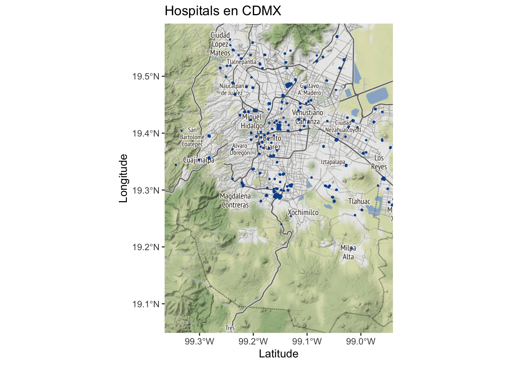
Si usaramos nuestro mapa, vemos que no es tan exacto:
world_states %>%
ggplot() +
geom_sf(alpha=I(0.0)) +
coord_sf(xlim = cdmx_bb[1,],
ylim = cdmx_bb[2,]) +
geom_sf(
data = cdmx_hospitals$osm_polygons) +
coord_sf(xlim = cdmx_bb[1,],
ylim = cdmx_bb[2,]) Coordinate system already present. Adding new coordinate system, which will replace the existing one.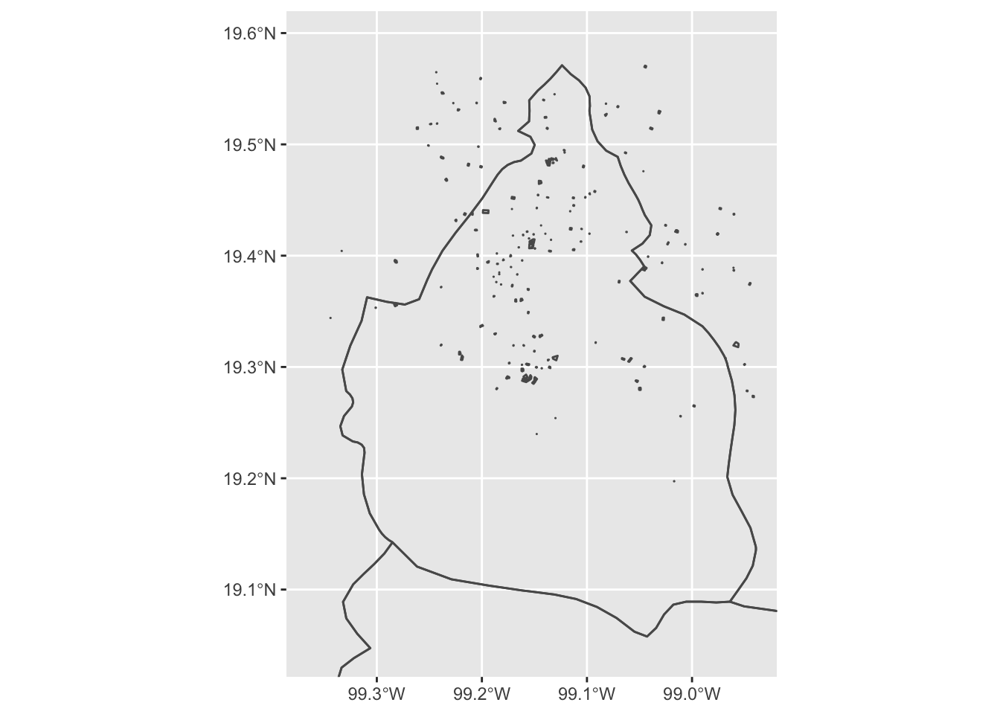
labs(
title = "Hospitales en CDMX",
x = "Latitude",
y = "Longitude"
) $x
[1] "Latitude"
$y
[1] "Longitude"
$title
[1] "Hospitales en CDMX"
attr(,"class")
[1] "labels"13.6 Geolocalización con R
Siguiendo el tutorial de Jesse Saddler https://github.com/jessesadler/intro-to-r, vamos a geolocalizar un par de puntos, especificos.
Utilizando el OSM, encontramos las coordenadas del Pepsi Center y de Coneval
latitud1 <- 19.3939006 # Pepsi Center
latitud2 <- 19.3898313 # Coneval
longitud1 <- -99.1736976 # Pepsi Center
longitud2 <- -99.1735151 # Coneval
lon<-c(longitud1, longitud2)
lat<-c(latitud1, latitud2)
nombres<-c("Pepsi Center", "Coneval")
lugares<-as_tibble(cbind(nombres, lon, lat))Necesitaremos las coordenadas de nuestros puntos para poner el mapa, una vez que tenemos nuestra dataframe vamos a pasar como un objeto sf que se pueda graficar:
lugares_sf <- sf::st_as_sf(lugares, coords = c("lon", "lat"), crs = 4326)Hoy si podemos usar el paquete {mapview} que nos permite tener un mapa interactivo
mapview::mapview(lugares_sf)13.7 De vuelta a {mxmaps}
Tambien podemos traer los mapas desde el paquete de Diego Valle-Jones
data(mxmunicipio.map)
data(mxstate.map)
head(mxmunicipio.map) long lat order hole piece id group region
1 -102.0978 22.02325 1 FALSE 1 01001 01001.1 01001
2 -102.0971 21.99612 2 FALSE 1 01001 01001.1 01001
3 -102.0694 21.96898 3 FALSE 1 01001 01001.1 01001
4 -102.1319 21.97684 4 FALSE 1 01001 01001.1 01001
5 -102.1390 21.93753 5 FALSE 1 01001 01001.1 01001
6 -102.1642 21.93712 6 FALSE 1 01001 01001.1 01001head(mxstate.map) long lat order hole piece id group region
1 -102.2660 22.40372 1 FALSE 1 01 01.1 01
2 -102.2649 22.40020 2 FALSE 1 01 01.1 01
3 -102.2503 22.38722 3 FALSE 1 01 01.1 01
4 -102.2521 22.37435 4 FALSE 1 01 01.1 01
5 -102.2281 22.37468 5 FALSE 1 01 01.1 01
6 -102.2233 22.37134 6 FALSE 1 01 01.1 01El mapa de estados:
mxstate.map %>%
ggplot(aes(long, lat, group=group)) +
geom_polygon(fill = "white", color = "black", size = .2) +
coord_map()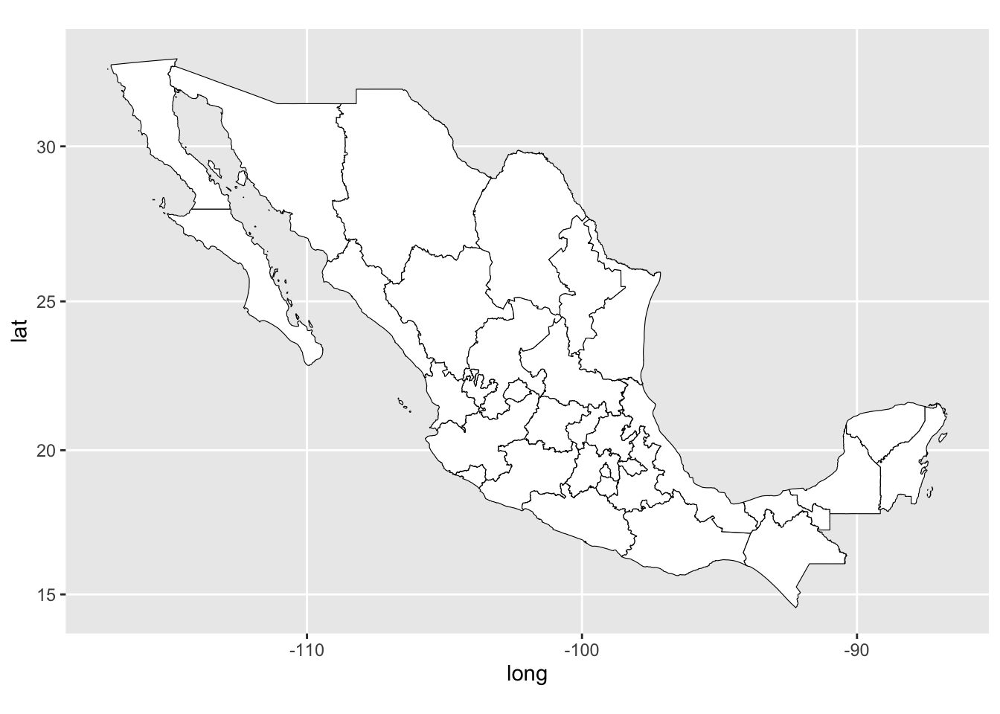
El mapa de la CDMX:
mxmunicipio.map %>%
filter(region>"09000" & region<"10000") %>%
ggplot(aes(long, lat, group=group)) +
geom_polygon(fill = "white", color = "black", size = .2) +
coord_map()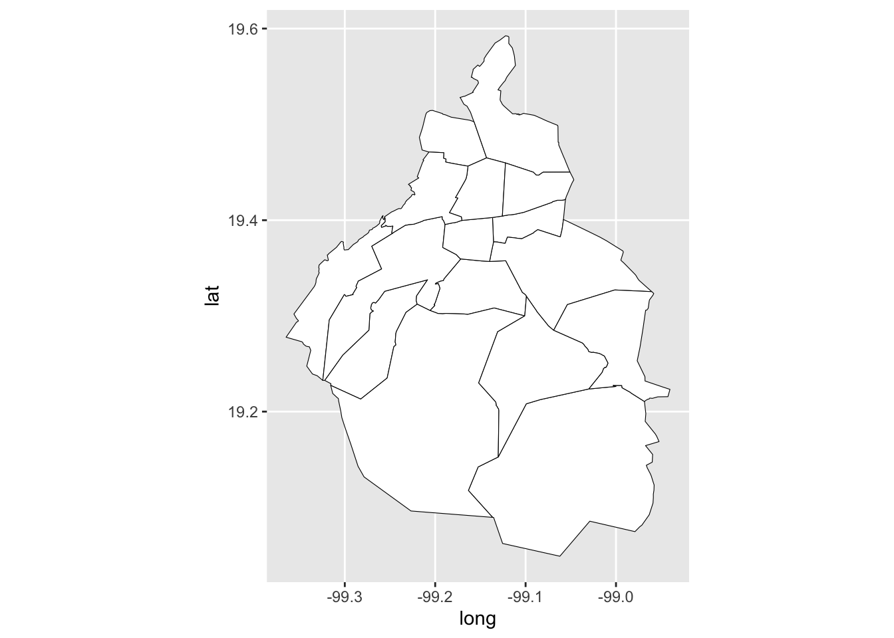
El mapa de la CDMX con los puntos
mxmunicipio.map %>%
filter(region>"09000" & region<"10000") %>%
ggplot(aes(long, lat, group=group)) +
geom_polygon(fill = "white", color = "black", size = .2) +
annotate("text",
x=as.numeric(lugares$lon),
y=as.numeric(lugares$lat),
label=lugares$nombres) +
coord_map()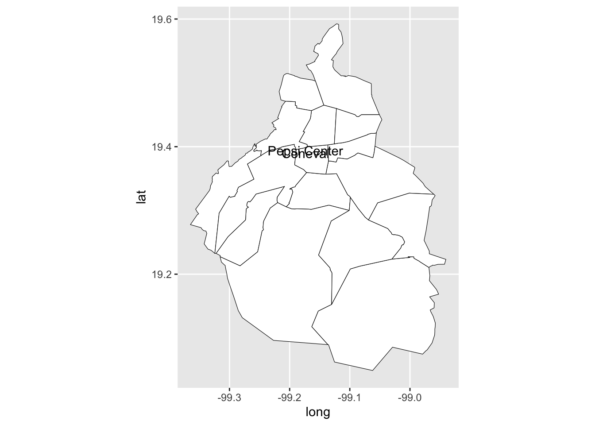